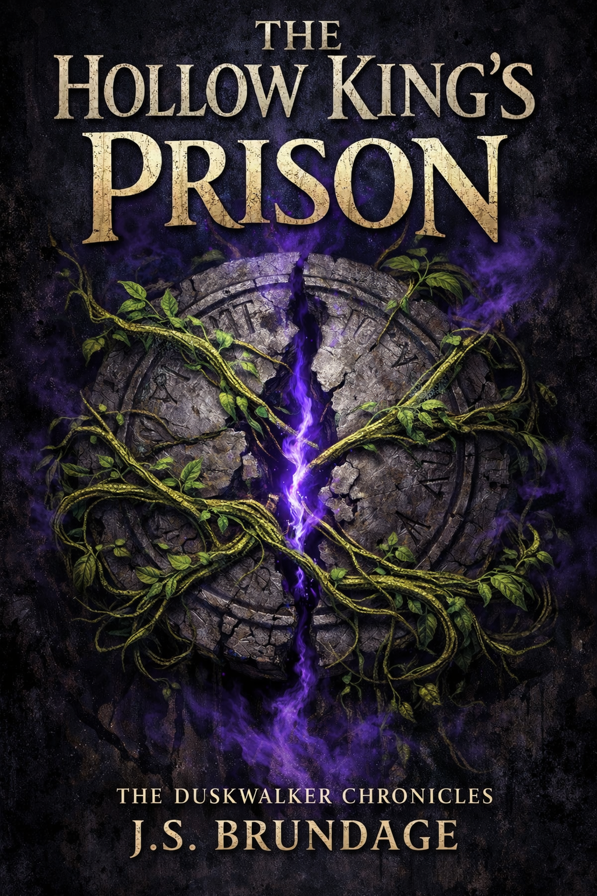
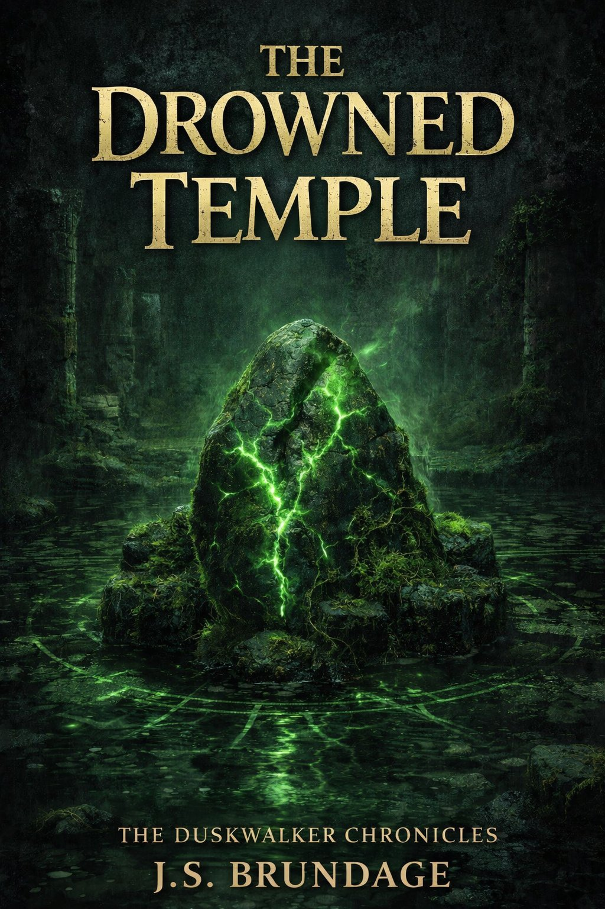
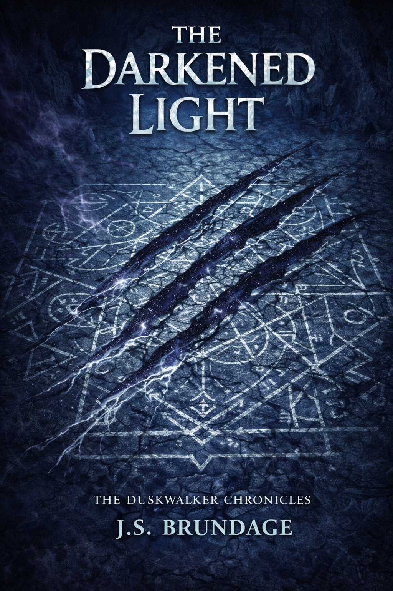

A Found-Family Fantasy Adventure
For readers who love Ranger's Apprentice and Percy Jackson



J.S. Brundage built the Thornwick Protectorate for his sons. As a Dungeon Master, he'd spent years drawing maps, voicing NPCs, and setting traps. But here's the thing about being the DM: you never get to be surprised.
He wanted to play too.
On a rainy weekend when his youngest and he were both home sick with the flu, he decided to try something different—could AI run a decent D&D session? He wrote a prompt, set the scene in a corner of the Protectorate he'd never fully explored, and started rolling dice.
What happened surprised him. The AI didn't just run combat—it told a story. Characters emerged with real voices. Tensions built. For the first time, he got to experience his own world without knowing what came next.
The Duskwalker Chronicles is a gift for his boys, born from a flu-weekend experiment. Welcome to the Thornwick Protectorate.
"This is the best book my Dad has ever written." — C.